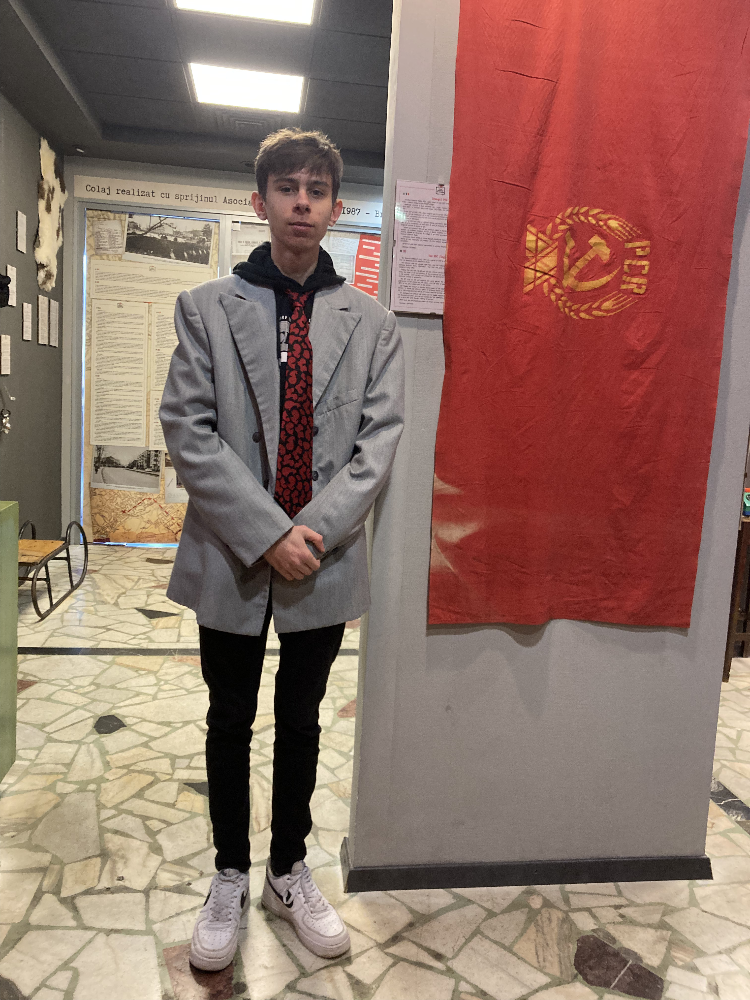

6 martie 2024
Muzeul Comunismului
💜 Te iubesc pentru ca mi-ai oferit dorinta de a oferi 💜
La baza sunt o persoana lipsită de inițiativa. Aproape niciodată în viața mea nu m-am aruncat după experiențe noi. Insa totul s-a schimbat din ziua în care te-am
cunoscut. Brusc a avut loc o scânteie în mine care a aprins un foc puternic: o dorința de a descoperi, de a încerca și de a oferi. Ești singura persoana care a
reușit sa schimbe cele mai adânci trăsături ascunse în mine. E ceva paradoxal. Tu mi-ai oferit motivația de a-ți oferi tot ce e mai bun. Nu aș ști cum se
întâmplă. Nu aș ști de ce se întâmplă. Insa știu ca se simte bine. Ador sa fiu motivat sa facem lucruri împreună.